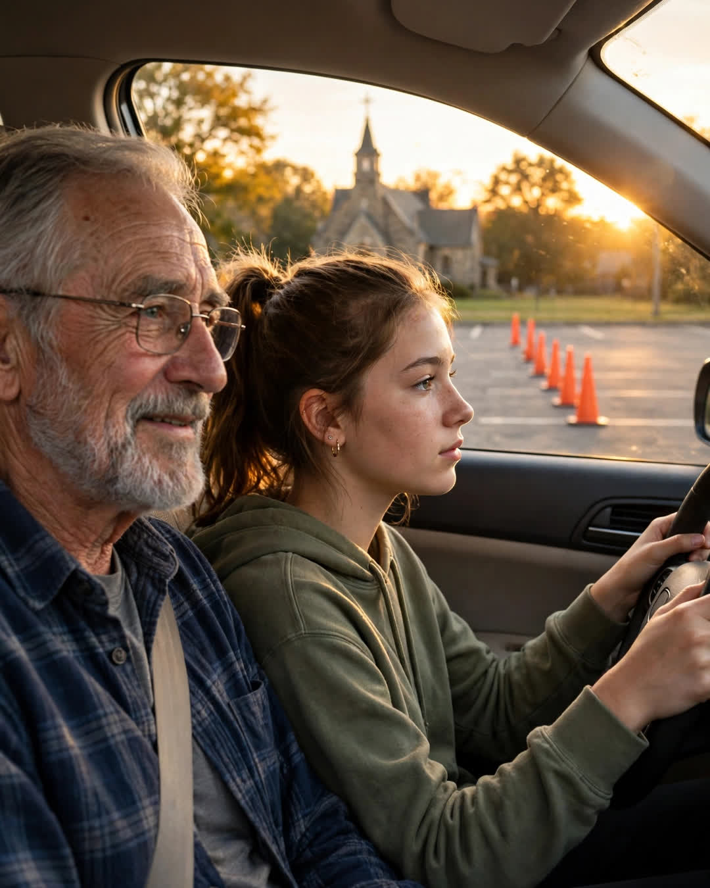

The Driving Lesson
A Clipp Kaili original story

My grandfather taught me to drive in an empty church parking lot, and he started the first lesson by turning the car off.
"Before you go anywhere," Grandpa Ray said, settling into the passenger seat of his old sedan like a man with nowhere urgent to be, "you sit. Hands at nine and three. Breathe. A car can smell fear, Lila, and so can every driver around you."
I was fifteen, all nerves and importance. The lot was enormous and completely empty except for two crows and a row of orange cones he had brought from home — brought from home, in the trunk, along with a thermos, as if we were going camping instead of learning to drive in first gear around a Presbyterian church.
He had phrases for everything. That was his whole teaching method: a sentence for every situation, delivered calm as weather.
"Easy on the gas. A car is a big animal. You don't kick a horse to ask it to walk."
"Look where you want to go, not where you're afraid of going. The car follows your eyes like a dog follows a hand."
Turning, checking mirrors, the terror of reverse — he had a line for all of it, and beneath every line, the same steady thing: his complete, unhurried belief that I was going to be fine. Not talented. Not special. Fine — the way you are fine when somebody who loves you refuses to flinch while you learn.
"Everybody's a bad driver at the start," he said, the day I killed the engine four times in ten minutes and cried behind the wheel. "The only ones who stay bad are the ones too proud to stall. Stall all you want in this lot, baby girl. That's what empty lots and grandfathers are for."
I passed my test on the first try. The examiner said I was the calmest sixteen-year-old she'd ridden with all year. I didn't tell her I had a seventy-four-year-old man narrating in my head, and that in my head he was holding a thermos.
Grandpa's been gone nine years. The sedan is gone. The church lot has been repaved smooth and striped bright, and the crows, I assume, have told their grandchildren about us.
Last month, I took my son Noah to that same lot.
He's fifteen — all nerves and importance, hands gripping the wheel of my car like it might leave without him. I had not planned what to say. I sat down in the passenger seat, and before I had decided one single thing about how to teach him, I heard myself say:
"Before you go anywhere, you sit. Breathe. A car can smell fear."
He stalled four times in ten minutes. On the fourth, he looked over at me with his grandfather's — his great-grandfather's — exact expression of apology, and I heard Ray come out of my mouth one more time, steady as Sunday:
"Stall all you want in this lot. That's what empty lots are for."
I didn't cry until the second lap. Noah was too busy checking his mirrors to notice — looking where he wanted to go, not where he was afraid of going, exactly the way he was told by a man he barely remembers, in phrases that turned out to be stronger than memory.
A grandfather's lessons don't end when the car stops.
They just change drivers, and keep going.
← Back to all stories